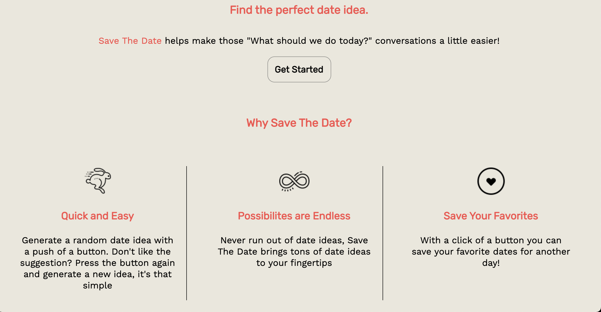

Tharwin Carr -
Web Developer
About Me
I am a web developer who recently graduated from Bloc's coding boot camp. I strive to write clean, efficient code, and enjoy spending my time perfecting this craft. I love coding because it is challenging and keeps my mind sharp. I look forward to working with developers who share the same passion and excitement for coding like me. Outside of coding, my interests include playing basketball, reading a good book, and hiking any of California's beautiful trails. I am always learning and trying to better myself while having fun doing so!
Projects
Save The Date
Technology Used: PostgreSQL, Express, React, Node
This app generates a random date idea and presents it to the user. Date ideas that the user would like to save for later can be added to a favorites list. Also, there is a form for the user to submit a new date idea that can be generated as well. This app was the first full capstone project I worked on while enrolled in BLOC. I built this app because I wanted to help fix the problem of "What should we do today?".
Smoothie Me
Technology Used: PostgreSQL, Express, React, Node
This app generates a list of curated smoothie recipes. Each smoothie recipe can be expanded to show the details of what is exactly in each smoothie. Also, there is a feature to add a smoothie to a favorites list so the user can save the recipe for later. This app was the final capstone project I worked on while enrolled in BLOC. I built this app because I drink smoothies almost every day and love trying new recipes.
Imagery
Technology Used:
 ,
,
 ,
,
 ,
,

This app shows the user-curated images and also lets a user search for images by topic. It shows the photographer under each image and allows the user to follow the photographer's page or download it for personal use. This project was for BLOC during our API Hack Capstone module. I chose to make this app because I love photography and like to follow new photographers. I went with a simple design, which makes the app easy to use.